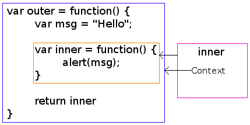

When first learning how to program, a fundamental aspect is to learn about scope. Many languages copy the C syntax for scope, including JavaScript. But while these language copy the C rules for scope, JavaScript does not. This results in frustration and potentially problematic code. JavaScript instead implements scope in a way that forces programmers to think a little differently.
This post will explain how JavaScript implements scope and explains a very useful result of its scoping: Closures. It motivates the utility of JavaScript's scope model by explaining its role in asynchronous programming.
Scope
C implements scope using the block operators: {}. The type of scope it implements is called block scope and where ever the block operators {} are declared, the compiler will create scope. Languages (besides JavaScript) that copy this notation follow more-or-less the same block scope rules (e.g. Java).
JavaScript uses block operators {} but it does not implement block scope. Coming from C/C++, the following code makes perfect sense (please do not try run this JavaScript code):
for (i=0; i < 4; i++) { //Outer loop
for (i=0; i < 2; i++) { //Inner loop
document.write("Hello World");
}
}
Firstly, note that the above will cause an error in Java, but in C/C++ (whose scope syntax JavaScript has copied), it works fine. This looks like it will output Hello World eight times. It won't! It will instead loop endlessly, outputting Hello World forever. This is because JavaScript does not implement block scope; the i of the inner loop keeps resetting the i of the outer loop, and so the outer loop's end condition is never achieved. This is confusing for people experienced with block scope, and JavaScript should have copied the block scope rules if it copied the operators. JavaScript realises their mistake and so the letL1 operator, which implements block scope, has been approved for future JavaScript releases.
I feel that adding block scope solves the problem in a haphazard way. Firstly, it alters the way block scope in the C style is used, and secondly, it will entice programmers with experience of block scope to use let instead of something better.
But is there something better? Scope has traditionally been implemented in JavaScript via functions and is known as function scope. There is an argument to be made that when used correctly, function scope can be very elegant and achieve most of what block scope does. But first, an explanation of function scope is in order...
Function Scope
Function scope means that everything between bracket operators {} is scoped as long as it is part of a function.
var foo = "Goodbye";
var message = function() {
var foo = "Hello";
document.write(foo);
}
message(); //Hello
document.write(foo); //Goodbye
The code snippet above demonstrates function scoping: inside the function message, the variable foo is scoped and is distinct to the variable foo outside the function. Function scope is used heavily in JavaScript. In fact, there is a common pattern to create a function just for the purpose of scope. As an example, the standard advice for writing JQuery plugins is to use the following pattern:
(function($) {
//Do things here - they are scoped
}(JQuery))
In the above example, the last line invokes the function by using the invocation operator () with the input parameter JQuery. It immediately executes code inside the function which is scoped. In JQuery, a short cut for the JQuery function is $. Unfortunately, $ is a shortcut for other JavaScript libraries as well (e.g. ProtoTypeJS). To prevent polluting the global namespace with JQuery's $ (and also avoiding clashes with plugins that may be written for other JavaScript libraries), scope is required. The above code snippet achieves the desired scope.
Functions Within Functions
Since functions have scope, declaring a function within another function provides another level of scope:
var func1 = function() { //outer function
var msg = "foo";
var func2 = function() { //inner function
var msg = "bar";
document.write(msg); //bar
}
func2();
document.write(msg); //foo
}
func1();
I will use the term inner function to mean a function declared within another function and outer function to refer to the function it is declared in (see code snippet above).
In addition to its own scope, an inner function has access to the variables of the outer function as long as it does not declare variables with identical names (in which case it will overwrite the variables, but just within that function scope). For example:
var foo = function() {
var msg = "bar";
var inner = function() {
document.write(msg); //bar - msg can be accessed here
}
}
foo();
The above seems intuitive and obvious, and I understand the reader not being blown away by its utility. But the pattern of having an inner function that has access to an outer function's variable is the basis of a closure, which is very useful.
Closures
A Technical Definition
A variable that is assigned to a function is a structure in memory that is used to represent the function. For many languages, this structure is the memory address of the function, resulting in the variable only being able to invoke the function. Some languages like JavaScript implement a slightly more complex setup for the structure. For these languages, the structure holds both the address of the function and its referencing environment. The referencing environment means the environment the function was originally declared in. If the function was originally declared within another function, then the referencing environment will mean the function that the original function was declared in.
Having access to the referencing environment means access to certain non-local variables. Normally, a function has access to its own local variables and to the global variables. With the referencing environment at the structure's disposal, calls to certain non-local variables (i.e. variables that were not declared in the function, but were declared in the function where it was defined) are possible. JavaScript implementors refer to the referencing environment as the function's context. When the structure that points to a function also contains its original context (referencing environment), it is called a closure. The image below demonstrates the concept, whereby the context points to the original function (outer) that the function variable inner was declared in:

How Closures Work And Are Used (Not Too Technical)
In more laymen's terms, an inner function defined within an outer function has access to all variables within the outer function. In JavaScript, the inner function is a closure because JavaScript includes its context. Both the inner and outer functions are scoped.
var closureExample = function() { //outer function
//declare variables within the outer function
var closureFunction = function() { //inner function
//Do things here, and have access to outer function's stuff
}
return closureFunction;
}
var closure = closureExample();
When presented like this, closures do not seem interesting. But, when the inner function lives longer than the outer function, the inner function (i.e. the closure) will have access to state from that outer function that is not accessible anywhere else. Therefore closures have the ability to implement something that is taken for granted in classical object oriented languages: Private State.
Keeping Things Private
In a classical object oriented language, it is easy to keep methods and state private: Put the private keyword in front of such state and methods. Modern object oriented scripting languages do not have this functionality. In that sense, JavaScript is in good company with the likes of Python and Ruby.
But private state and methods are very useful at times. And it can be achieved in JavaScript by using a closure:
var closure = function() {
//This is a private variable
var counter = 0;
return { //This object being returned is assigned to closure
getCounter : function() { return counter;},
increment : function(inc) {
if (typeof inc !== 'number')
inc = 1;
counter += inc;
}
};
}();
closure.increment(10);
alert(closure.getCounter()); //10
There is a lot of things happening in the above example:
- First, notice on the last line the
();- the function is being invoked, the result of which is being assigned toclosure. To hammer this point home: We are not assigning the variableclosureto a function, we are instead assigning it the result of the invoked function (what is returned from the function). This common pattern was mentioned above whereby a function is created only to create scope. - The result assigned to
closureis an Object LiteralL2 that consists of two functions which are closures. They are closures because they have access to the context in which they were declared.
In the code snippet above, once the outer function is invoked it cannot be accessed again because it is an anonymous function. The pattern of an inner function living longer than the outer function is the useful pattern for closures because it implements private state. The two closure functions within the object assigned to closure have access to counter. counter is private: It cannot be altered nor accessed except through the closure functions.
I will say it again: Closure functions are interesting when the inner functions "outlives" the outer object where it was declared. This is specially useful for asynchronicity.
Why Closures Are So Useful: The Big Picture
One of JavaScript's most appealing features is that it is asynchronous from "the ground up". Asynchronicity is achieved by using an event driven programming model: A function is executed only when an event occurs. That function is passed as an argument to the event handler. Functions used in this manner are called callback functions. The callback function, like any JavaScript function, will have access to the context where it was declared in. If the callback function is an inner function, it is a closure that is able to access variables in the outer function. As was shown above, closures can be used to maintain private state. So by using closure callback functions, you get the best of both worlds: You can implement event driven programming without having to maintain any state by passing it via the event handler. This is extremely elegant and will decrease programmer errors. And this is a killer reason (amongst others I am sure) that function scope along with closures are so useful.
JavaScript should not be used like classical object oriented languages. Its power lies in the fact that it should be able to handle more load (on both the server and the client) by using an event driven approach that does not block IO. Therefore I think the JavaScript programmer should be thinking in callback functions that are closures. And for this, function scope becomes essential and in a way, elegant.
Watch Out: Callbacks And Closures Sometimes Do Not Play Nicely
Of course there are always gotchas with JavaScript. Lets define a callback function:
var createCallBack = function() { //First function
return new function() { //Second function
this.message = "Hello World";
return function() { //Third function
alert(this.message);
}
}
}
window.onload = createCallBack(); //Invoke the function assigned to createCallBack
Lets examine the above code. There are three function operators:
- The first
functionoperator creates a function object and is assigned tocreatCallBack. - The second
functionoperator uses the constructor invocation patternL3 to create a new object. - The third
functionoperator is the result of the return statement. It is a function object and because it is an instance ofObject, it gets returned instead of a new object (even though though the function was invoked withnew- read constructor invocation patternL3 for more info).
When invoking the createCallBack variable, what gets passed to the window.onload event handler is the result of what is returned by the seond function operator, which is the code in the third function operator. Did you get that? Read this paragraph again until you understand, and if not, stick this code into your browser and play with it.
The above code looks alright, except that undefined gets alerted to the screen (try it for yourself). It turns out that when an event handler invokes a callback function, the function invocation patternL4 is used. This results in the this parameter being bound to the global object (it is one of the pitfalls of the function invocation patternL4) instead of to the object that was created with the constructor invocation patternL3. To note that this problem only occurs when one uses the constructor invocation patternL3 with callbacks like I have illustrated above. To get around this, apply the standard fixL5 for function invocation by declaring a that variable to point to this:
var createCallBack = function() { //First function
return new function() { //Second function
var that = this;
this.message = "Hello World";
return function() { //Third function
alert(that.message);
}
}
}
window.onload = createCallBack(); //Invoke the function assigned to createCallBack
Since the function invoked by the event handler (the third function) is a closure, it has access to the that variable (which is private), and so it has access to the new object created by the constructor invocation pattern.
Why Would One Want To Use The Constructor Invocation Pattern With Callbacks?
To tell you the truth, there is no good reason to mix the constructor invocation patternL3 with a callback. I included it above as a pitfall because it is sometimes used (and misused). Using the constructor invocation patternL3 is necessary when one wants to be able to change the default prototype linkings (see hereL6 for an example of this). This is only necessary when one wants to create objects that are inherited from another object. It is not necessary for creating new objects because new objects can be created via a closure.
For example, here is a code snippet that uses the constructor invocation patternL3 in order to create separate objects for each callback:
var createCallBack = function(init) { //First function
return new function() { //Second function
var that = this;
this.message = init;
return function() { //Third function
alert(that.message);
}
}
}
window.addEventListener('load', createCallBack("First Message"));
window.addEventListener('load', createCallBack("Second Message"));
But instead of using constructor invocation patternL3, the snippet can be rewritten by just using closures:
var createCallBack = function(init) { //First function
var obj = { //This object is created within the first function and is accessible
//to the second function due to the closure
'message':init
};
return function() { //Second function
alert(obj.message);
}
}
window.addEventListener('load', createCallBack("First Message"));
window.addEventListener('load', createCallBack("Second Message"));
The two code snippets above are equivalent, but the latter example is so much more concise and easier to read! Each code snippet demonstrates objects that have their own internal state. The load event is given two callback functions, each an instance of an object with its own state (note this example may not work for Internet Explorer older than version 9).
Conclusion
Closures make asynchronous programming elegant. In order to understand closures, it is vital to understand function scope. JavaScript being functionally scoped encourages event driven programming, the mainstay of asynchronicity.
Links
- http://wiki.ecmascript.org/doku.php?id=harmony:let
- http://doctrina.org/Javascript-Objects-Prototypes.html#cofl
- http://doctrina.org/Javascript-Function-Invocation-Patterns.html#ci
- http://doctrina.org/Javascript-Function-Invocation-Patterns.html#fi
- http://doctrina.org/Javascript-Function-Invocation-Patterns.html#standardfix
- http://doctrina.org/Javascript-Objects-Prototypes.html#coff